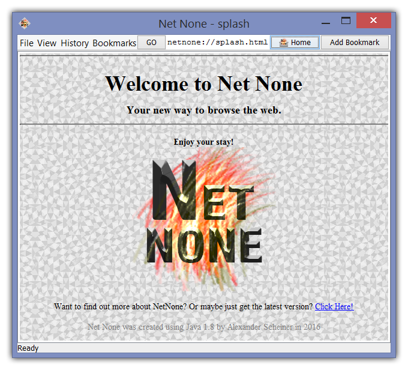

Welcome to Net None
Your new way to browse the web.
Enjoy your stay!

Download the latest version:
NetNone 1.4_1 (3/13/16 12:50 PM)
Screenshots:
About:
Net None is a Java 1.8 based web-browser.
It does not feature support for web scripts, only straight HTML.
You can find your bookmarks in "Documents/NetNone/bookmarks/bookmarks.txt".
As soon as Net None is fully functional, it will become Open Source and a link to the source will become available on this page.
Net None was created using Java 1.8 by Alexander Scheiner in 2016